السلوك العدواني
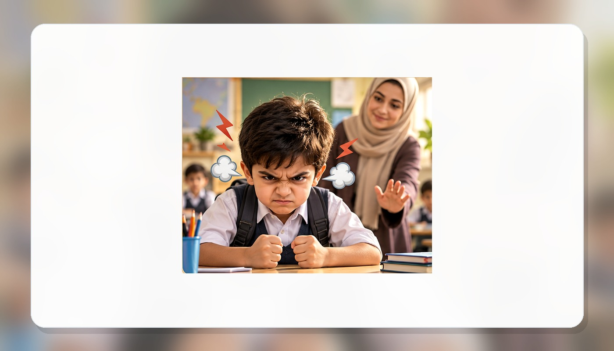
هو تصرّف يؤذي الآخرين بالكلام أو السلوك، وغالبًا يبدأ من غضب أو ضغط لم نعرف كيف نتعامل معه.
كيف يظهر السلوك العدواني؟
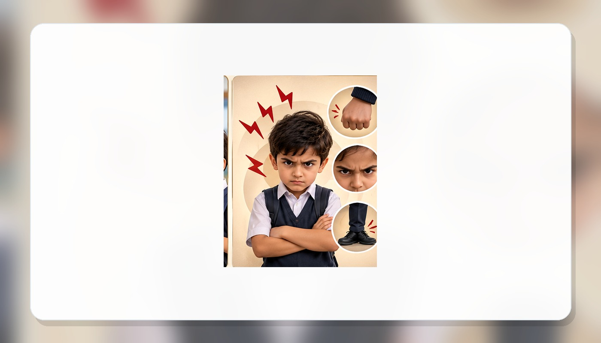
قد يظهر في الصراخ، التهديد، الدفع، إتلاف الأشياء أو استخدام كلمات تجرح الآخرين.
الكلمة الجارحة تؤذي أيضًا
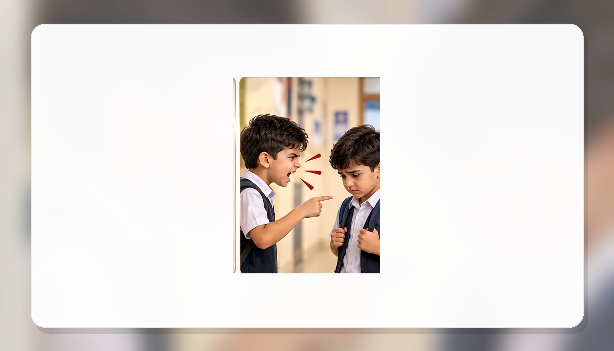
رفع الصوت والسخرية والتهديد قد تؤذي المشاعر حتى من دون ضرب أو تكسير.
لماذا يحدث؟
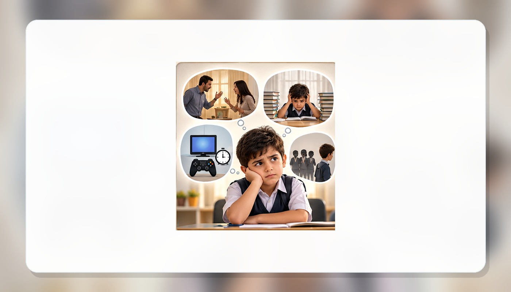
قد يكون وراء السلوك العدواني خلافات، توتر، قلة اهتمام، ضغوط أسرية أو مشاعر لا يعرف التلميذ كيف يعبّر عنها.
أفكاري تؤثر في تصرفي
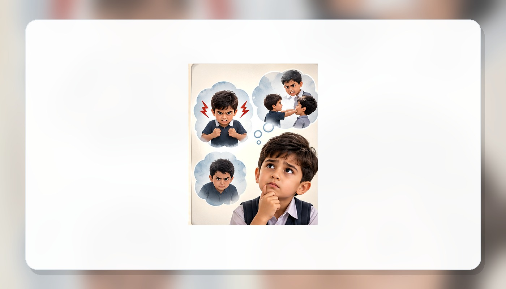
عندما أفسر الموقف بسرعة على أنه إهانة أو تحدٍّ، قد أتصرف بعصبية قبل أن أفهم ما حدث.
ماذا يحدث للآخرين؟
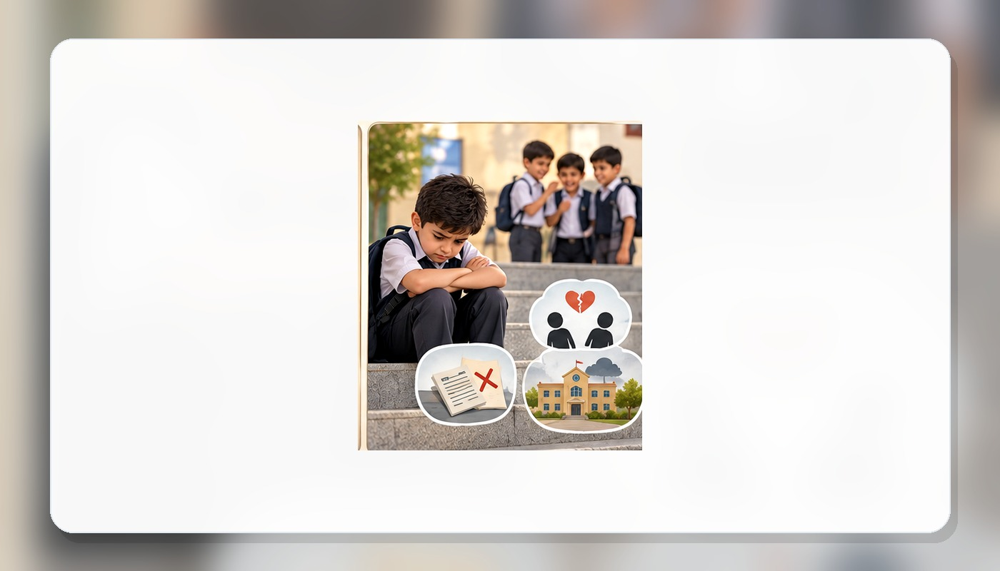
السلوك العدواني يسبب الخوف والابتعاد ويضعف الثقة والعلاقات داخل الصف.
وماذا يحدث لي؟
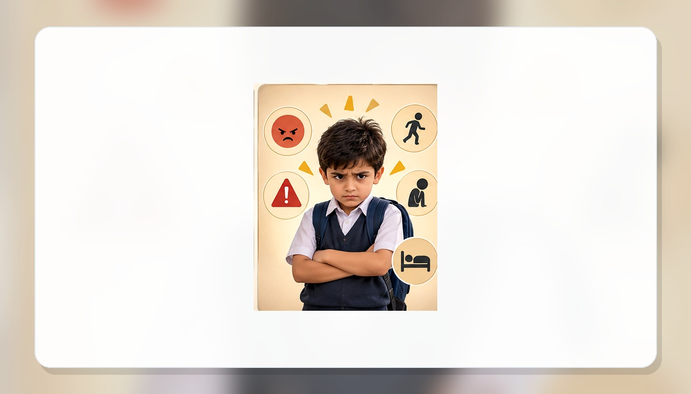
الاندفاع والغضب المستمر يضعفان التركيز والراحة والعلاقات، وقد يجعلان التلميذ يشعر بالوحدة.
الغضب ليس قوة
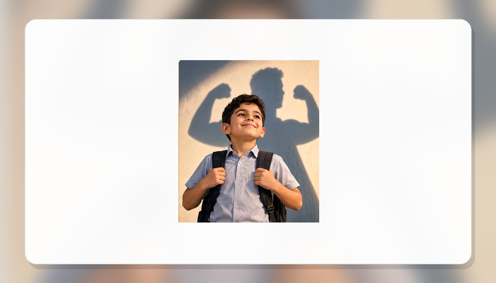
القوة الحقيقية أن أسيطر على نفسي وأختار تصرفًا يحفظ حقي ويحترم الآخرين.
توقّف قبل أن تتصرف
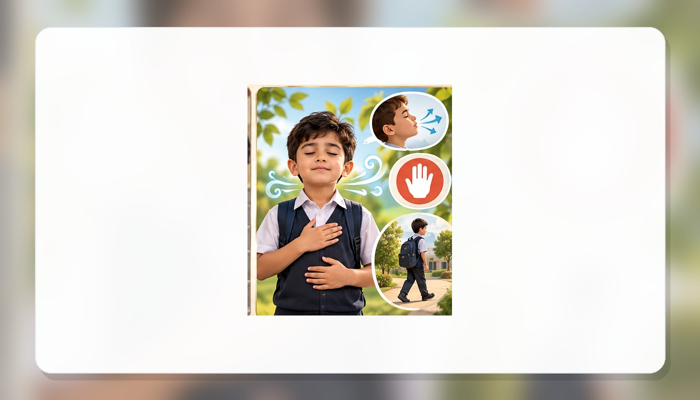
ابتعد لحظات عن الموقف، وخذ وقتًا قصيرًا حتى يهدأ جسمك وتستطيع التفكير بوضوح.
أفرّغ غضبي بطريقة آمنة
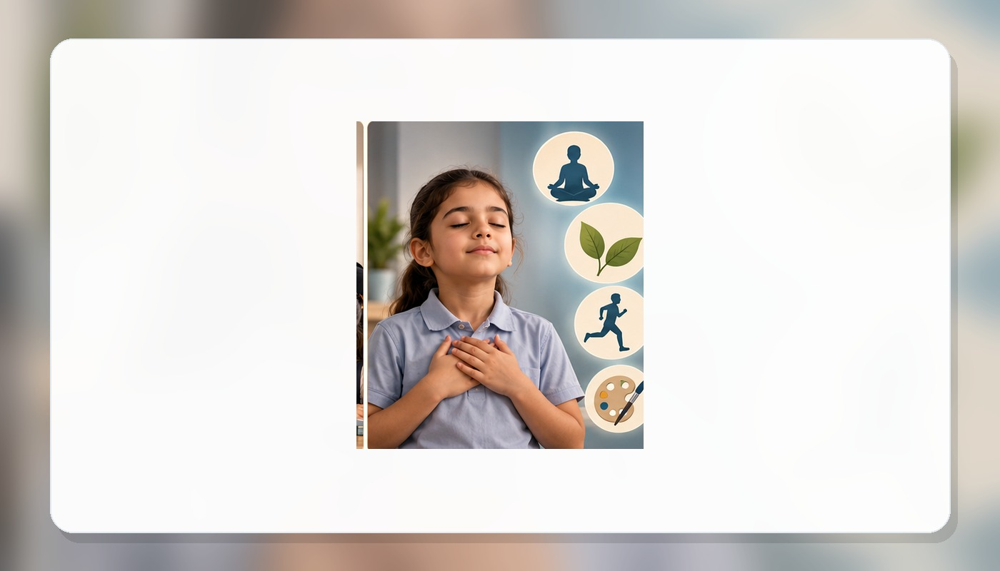
التنفس، الحركة، الرياضة، الرسم أو الجلوس في مكان هادئ تساعد الجسم على التخلص من التوتر.
أستخدم الكلمات
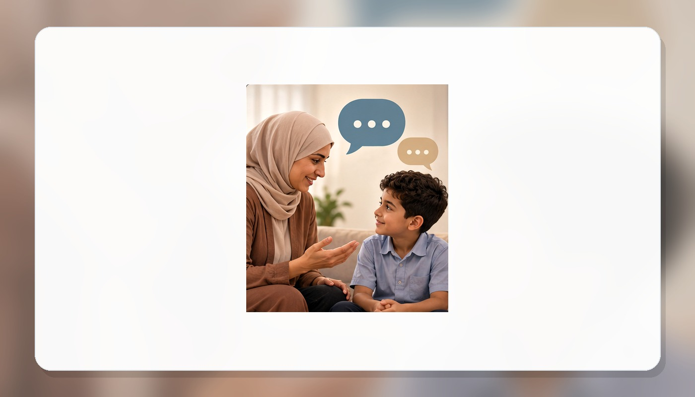
أعبّر عمّا أزعجني بهدوء: «أنا منزعج»، «لا أحب هذا التصرف»، «دعنا نتحدث بهدوء».
أطلب المساعدة
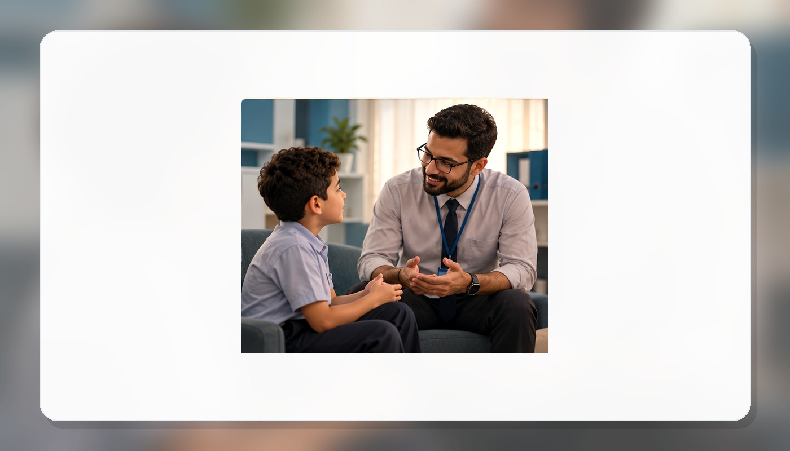
طلب مساعدة المعلم أو المرشد ليس ضعفًا، بل خطوة ذكية عندما يصعب علينا حل الموقف وحدنا.
دور الأسرة
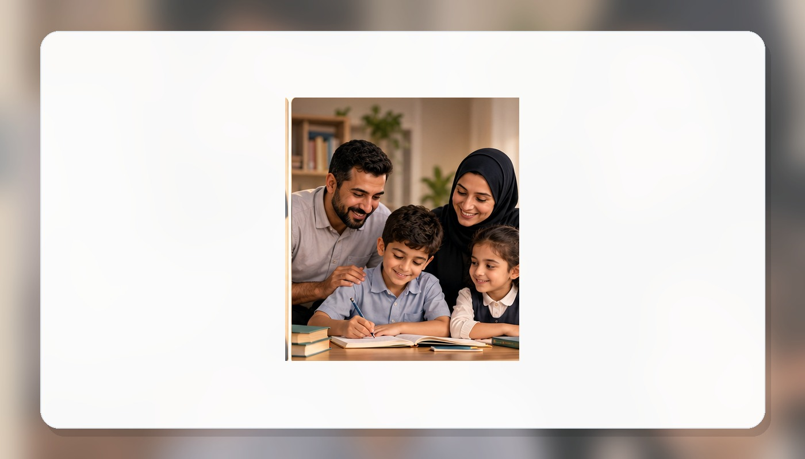
الاستماع للطفل، الحوار الهادئ، الحدود الواضحة والقدوة الحسنة تساعده على ضبط انفعاله.
العادات اليومية تساعدني
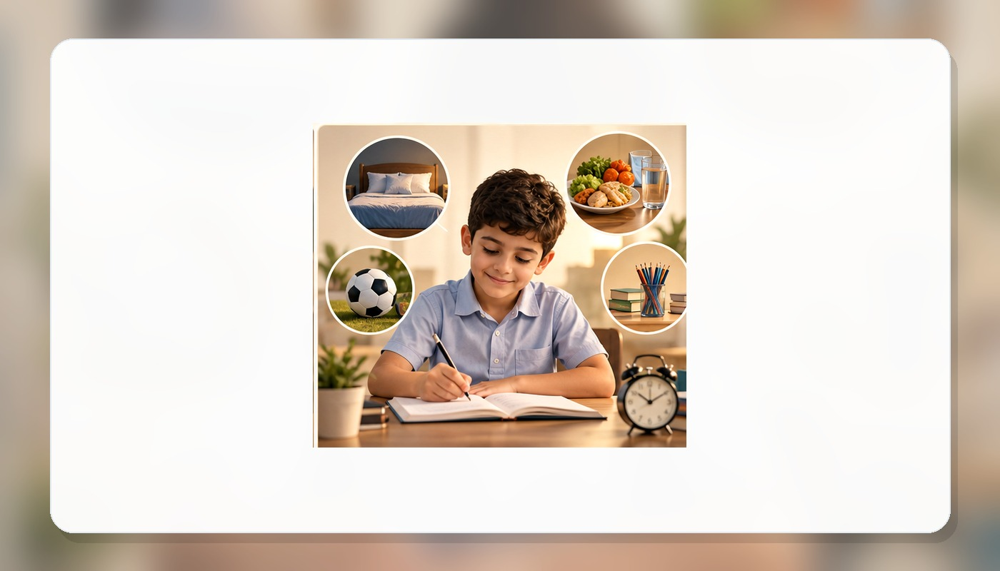
النوم الجيد، تنظيم الوقت، الطعام المتوازن، الدراسة والرياضة تقلل التوتر وتزيد قدرتنا على ضبط النفس.
نصنع صفًا آمنًا
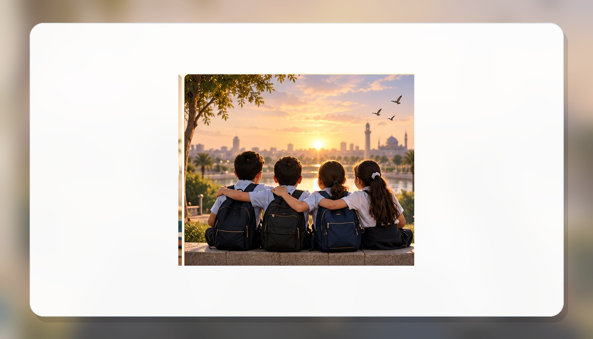
عندما نحترم بعضنا ونتعاون ونحل الخلافات بالكلام، يصبح الصف مكانًا أفضل للجميع.